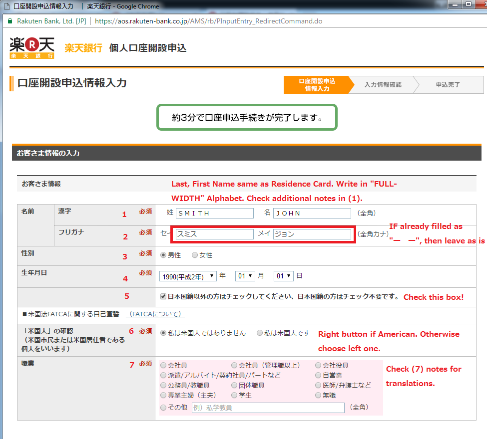

Look at this guide for information about applying for a Rakuten Bank account.
Introduction
Rakuten Bank is an online service that aims to provide various banking services to customers. Those who use or subscribe to various Rakuten services will often enjoy additional benefits for their banking needs. Just like with Rakuten Card, there are no physical offices you can go to so everything is managed online instead. Having an account with Rakuten is recommended if you heavily use things such as Card, Securities, Edy, or Super Points. In any case, you can read about a non-exhaustive list of advantages and disadvantages below:
Advantages
- All services available over the internet
- Enjoy additional benefits when linking bank to many other Rakuten services.
- Deposits can be done at Yuucho, and withdrawals from Yuucho and many popular convenience stores.
- It's possible to have up to 5 transfers and 5 withdrawals free per month based on your "Happy Program" ranking.
Disadvantages
- If you ran out of free transfers and withdrawals, the fee can be pretty high (especially weekends/holidays)
- Extra work may be necessary to link other company's services to Rakuten Bank (for billing/transfer purposes)
- Interest returns on your balance are lower compared to other companies.
Prerequisites
You, obviously, need to reside in Japan and also have at least one of:
- Japanese Driver's License
- Health Insurance Card
- Residence Card
After you submit the application you will be asked to submit proof of document for one of the above. This can be done via mobile application
or via snail mail. For obvious reason I recommend using the Rakuten Bank mobile app to upload images of your formal document of choice.
In addition, if you haven't registered for a Rakuten group account yet, then I strongly advise you do so as the below guide is tailored for those
who already have an account. Don't worry, the registration should be very straightforward (Last/First Name, username, password, e-mail address).
Some Notes...
Don't stay too long on a screen or else it will TIMEOUT and you will have to do it All. Over. Again. If you are slow in filling out Japanese forms then I recommend you look over this guide first and prepare in however way you wish before proceeding.
Application Process
Getting to Application Form
Go to Rakuten Bank's Home Page and click on the green button in the right navigation bar.
As I mentioned in prerequisites area, you should already have a Rakuten group account.
Therefore, click on the RED button shown below and login using your group account. It will autofill some fields for your convenience.
Form Part A: Bank Account Info
Refer to the notes below the images for additional information:

1) Your name should be input, in FULL-WIDTH ALPHABET, your name as shown on your residence card.
If you're like me who has strange characters in your name (such as a hyphen in first name), then omit it completely.
(eg "SMITH, ANNA-MARIE" should be "SMITH, ANNAMARIE")
2) If you registered your Rakuten group account using English name then this should be autofilled with "ー ー". You can choose to leave as is or replace with Katakana reading.
3) Left for Male, right for female. Nothing confusing here.
4) Birthday. Nothing special here.
5) "Please check this box if you do not have Japanese citizenship. Those with Japanese citizenship need not check this box."
Hint: you should check this box.
6) Check right box if you are American. Otherwise, check left one.
7) Below is a formatted table of the selections:
| Full-Time Employee | Full-Time (Manager or Above) | Company Executive |
| Haken/Part-time/Contract/etc | Self-employed | |
| Government/Education | Staff member of association | Doctor/Lawyer/etc |
| Housewife/Househusband | Student | Unemployed |
| Other (Fill in the blank) |
(Depending on what you chose in #7 above, you may have to fill out the below. Otherwise just move on.) Basically follow the notes directly on the image and fill in your company's information as best you can.
8) Input your residence's zip code and click button to the right. #9 and #10 should then be autofilled for you.
11) Enter the rest of your address as printed on the back of your residence card.
12) #11 except all in KATAKANA.
13) Enter your phone number.
14) This should be autofilled for you if you logged into your Rakuten group account. Just re-enter e-mail in confirmation box.
Follow instructions as written directly in the image above.
17) In order from top to bottom:
- Rakuten Bank Debit Card (JCB)
- Rakuten Bank GOLD Debit Card (Visa)
- Rakuten Bank Debit Card (Visa)
- Rakuten Bank Card (With Credit Card)
- Rakuten Bank "Jaune" Card (With Credit Card)
- Rakuten Bank "Cedyna" Card (With Credit Card)
- Rakuten Bank Cash Card (Deposit/Withdrawals only, no debit/credit)
18) Enter name in ROMAJI
19) PIN Number
20) Net-Shopping Password
21) Top button to apply for Cashing service, below button to pass.
22) Apply for Rakuten toto (Lottery service)? Check for yes, blank for no
23) Apply for Securities account? (top button for yes, below for no)
Finally, click on the next button to proceed.
Form Part B: Credit Card Info
Refer to the notes below the images for additional information:
Fill out #25-#27 as noted in image above.
28) Name in ROMAJI (Again)
29) Phone number
30) Maybe can leave blank
34) Here's another table, in the same ordering:
| Married with children | Married without children | Not married with children |
| Single (living away from family) | Single (living with family) |
36) Tables are fun!
| Own a house | Co-own a house with spouse | Co-own a house with someone not your spouse |
| Renting "mansion" | Renting "mansion" (Dormitory) | Renting "mansion" (Public Corporation) |
| Renting apartment | "Borrowing" a house | Company Dormitory |
| Dormitory | Boarding Housing | Others |
42) From left to right: working, student, unemployed, earning retirement benefits
43) If you earn your own income, check left. If you don't, choose right.
44) Your yearly income (before tax!)
45 - 50) Same as the company information you may have filled out earlier on page 1.
51) Job Role:
| Education | Reception/Associate | Administration | Labor | Business | Sales |
| Technology | Driving | Other |
| Full-time Employee | Personal Business | Government | Part-time |
| Haken/Contract | Executive | Other |
53) Industry:
| Manufacturing | Service | Retail |
| Educational Medicine | IT | Government |
| Construction | Insurance | Logistics/Shipping |
| Food/Restaurant | Real Estate | Printing |
| Utilities (water, gas, etc) | Agriculture | Others |
Confirm the following two points and click red button on bottom of page.
You have now reached the confirmation page (you are almost done!!)

Form Part C: Confirm + Submit
Make sure to check the box as shown (you can leave the others as-is - they're not subscriptions to anything or whatever that will spam you)
Aaaand, you are done! You should receive an e-mail with the confirmation receipt number. Now it's just a matter of waiting!
What To Do After
You are required to submit proof that you reside and work in Japan. You have the choice between multiple documents you can submit.
The two most commonly used documents are your Residence Card or your Health Insurance Card. Choose one you prefer, download the Rakuten
Bank App, and submit front/back images of your document through it. (Unfortunately I don't have a test account so I cannot create a
tutorial for this, but there's no rush so please ask a trusted Japanese friend to help you!)
Search "Rakuten Bank" or "楽天銀行" on your phone, or scan the QR code on the receipt screen (OR, you can even scan the QR code in the above image!)
Trivia/Nice-To-Knows
Will add as I think of them.